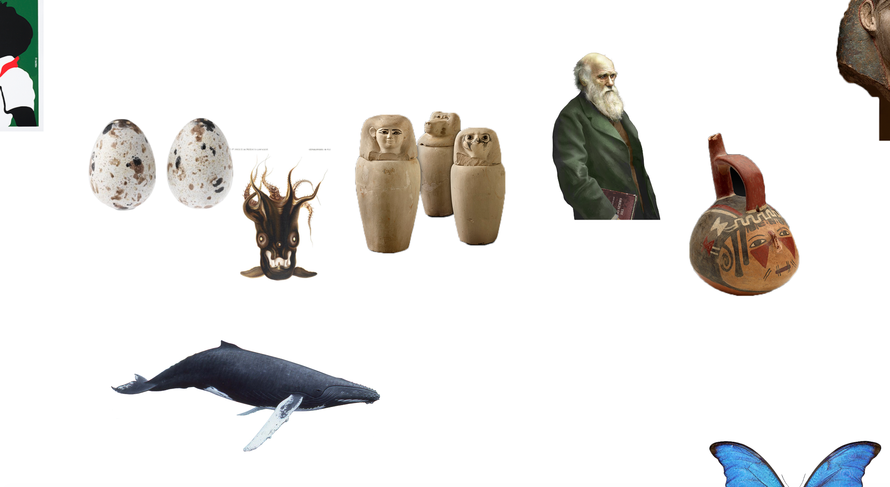
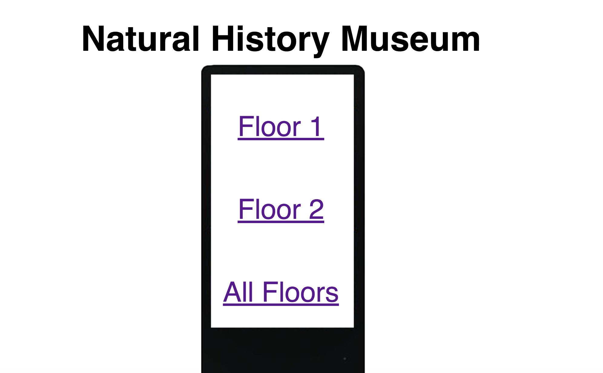
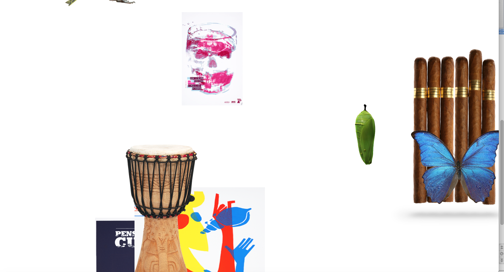

The idea of my project is to be placed in kiosks in the Natural History Museum. There are objects that go in a circle on a white background, making it look as if they are floating around freely. There would be a kiosk on every single floor, making it easy for the visitor to find the objects they want to see first. When you hover over a single object you can discover what floor and room it is in. This makes it easier for someone to go through the museum, if they want to see a certain piece, they know exactly where to go. 
The objects are animated to go in circles at different speeds and in different directions. The text shows up behind the objects in large Helvetica font so that it is easy to read. The whole sign is meant to be simple, this is why the objects are in front of a white background, making it look clean and not so busy.
 